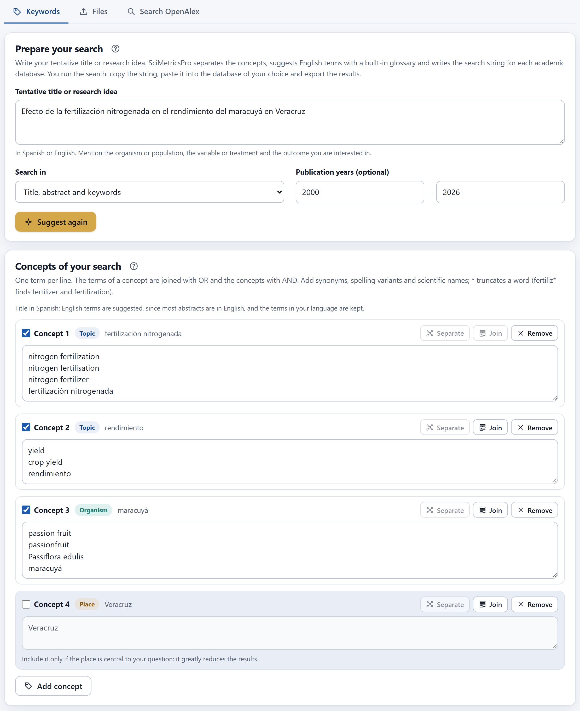
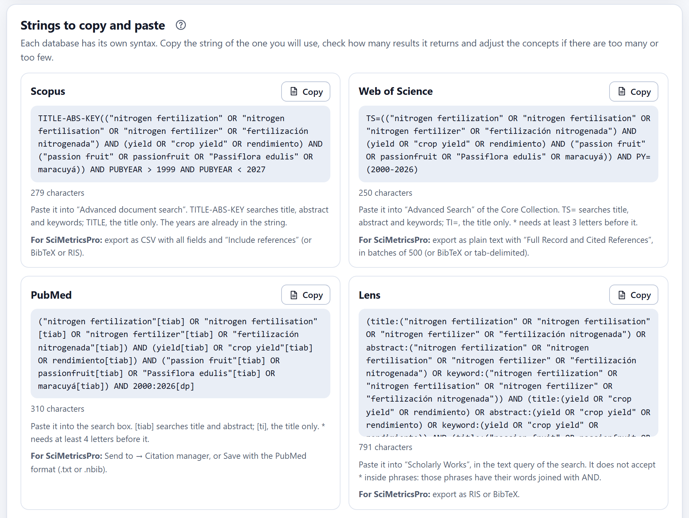
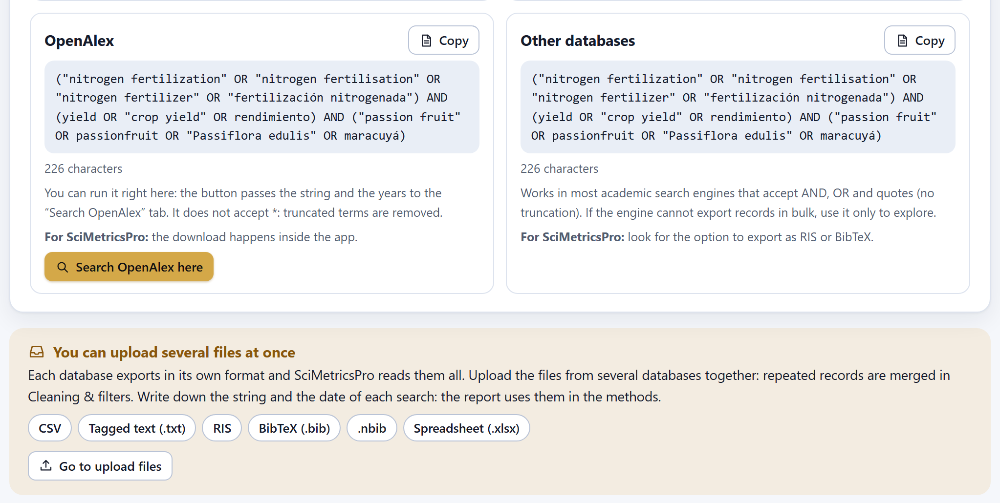
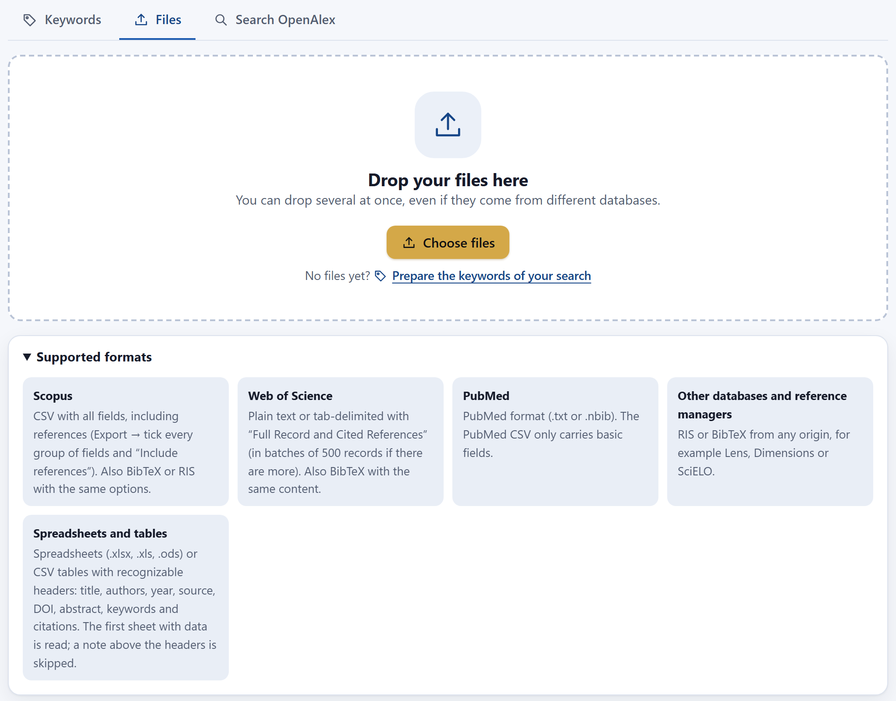
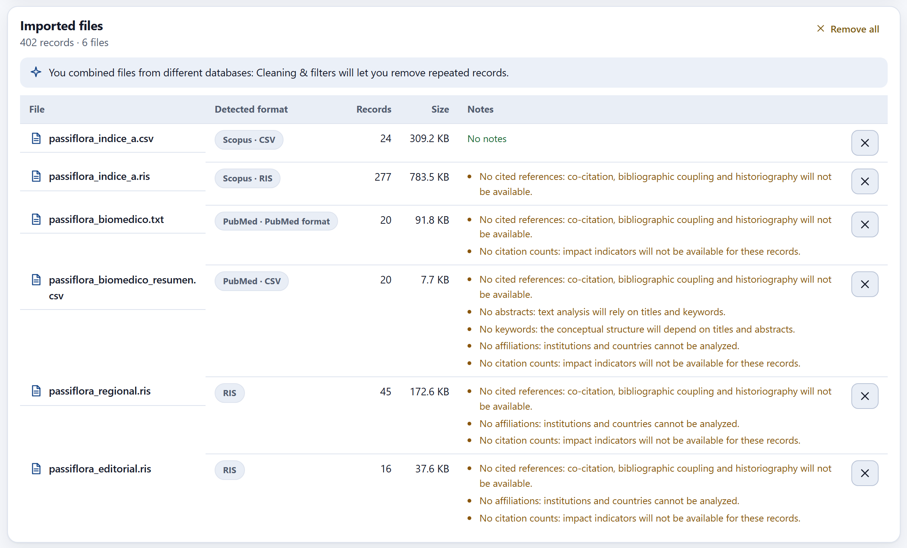
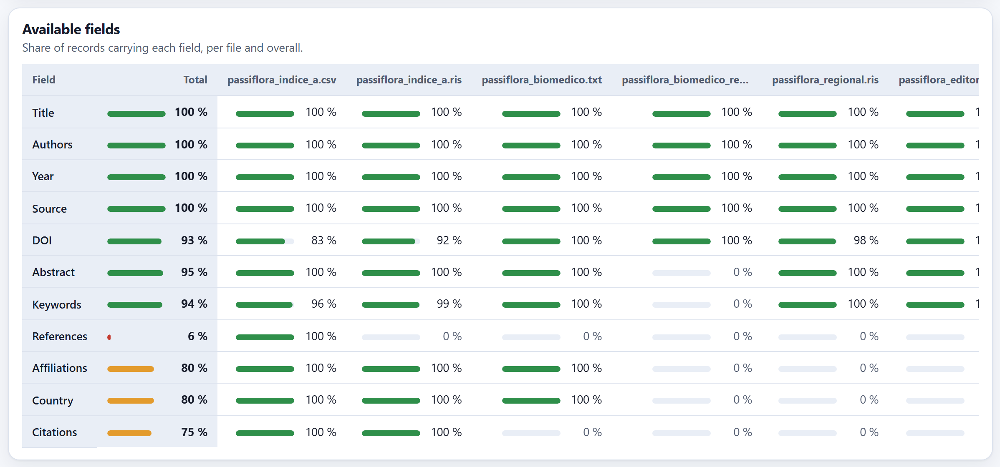
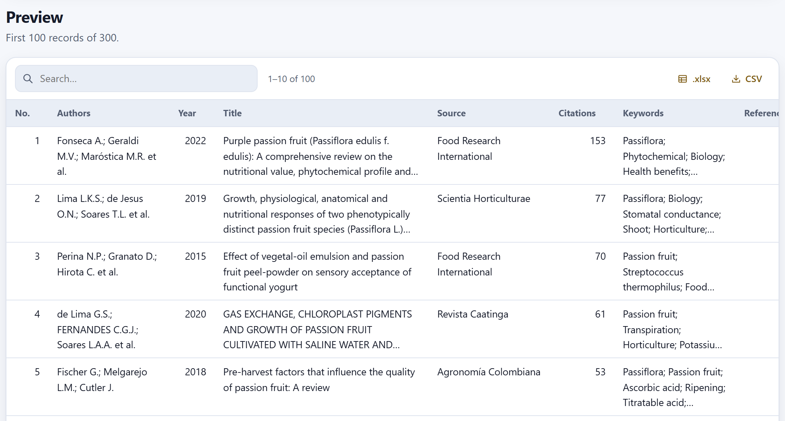
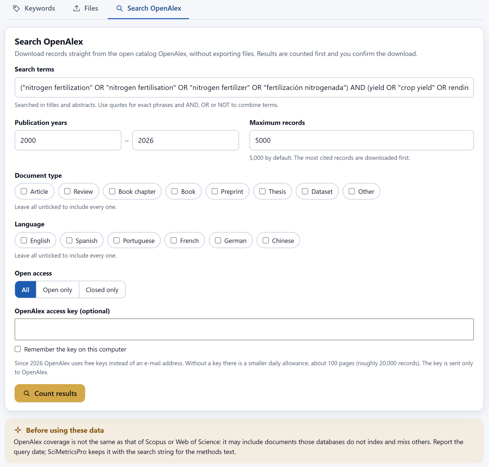
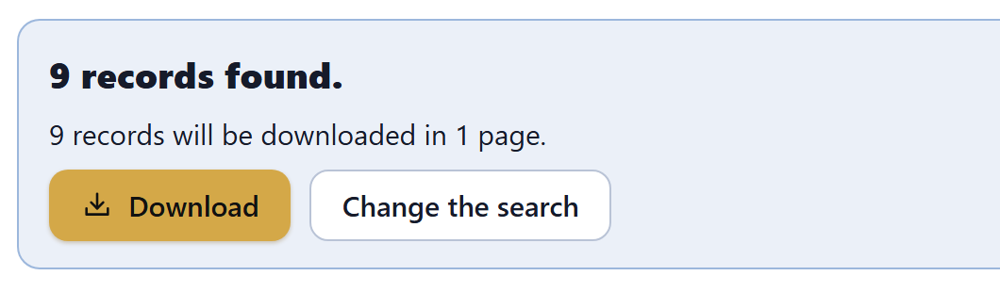

How to turn a working title into a search string for each academic search engine, what to export from each database, how to gather several files into a single set, how to read the table of available fields and the notes, and how to download records straight from the open bibliographic catalog.
The Import screen has three tabs that match three moments of the work. The first, Keywords, prepares the search before you have any data. The second, Files, receives the exports from the databases. The third downloads records from the open bibliographic catalog without exporting files. The screen opens on Files; with the focus on the tabs, the arrow keys ← → move from one to the other.
So that you can recognize each export, the Import screen shows the trade names of the databases, and that is how they appear in the screenshots. The text of the manual uses generic descriptions: multidisciplinary citation index A and B, public biomedical index, open scholarly search engine, linked research database, regional journal index and open bibliographic catalog. The cards of the app and the rows of the tables in this chapter follow the same order.
A systematic literature search is not done with a loose phrase typed into a search engine: the question is broken down into concepts, each concept is written in all its forms (synonyms, variants, scientific names) and the concepts are combined with logical operators. The Keywords tab does that work from your working title or research idea. The app does not search: it suggests the concepts, writes the string in the syntax of each search engine, and you copy it, paste it into the search engine of your choice and export the results. Everything happens on your computer; the title is not sent to any service.
Each concept of the question is a block. Within a block, the terms are joined with OR: it is enough for a document to use any one of them. Between blocks, AND is used: the document must touch every concept. So more terms within a block widen the search (they find documents that say the same thing in other words) and more blocks narrow it. Quotes search for an exact phrase and the asterisk truncates a word: fertiliz* finds fertilizer, fertilizers and fertilization.

1 2 3 4 5 6 7 8 9 10The app cuts the title into phrases at prepositions, articles and punctuation, drops generic research words (effect, analysis, study, evaluation) and looks each phrase up in a built-in bilingual glossary, which always prefers the longest phrase it knows: fruit quality is one concept, not two. The glossary has 587 entries: 323 concepts, 106 organisms with their common and scientific names, 67 modifiers (such as organic or nitrogen), 62 places and 29 generic words that are dropped. With a title in Spanish, the terms are written in English, the language of most abstracts, and the Spanish term is kept at the end.
| Part of the title | Type | Suggested terms | In the search |
|---|---|---|---|
| Efecto de… (effect of) | — | Generic word: dropped. | — |
| la fertilización nitrogenada (nitrogen fertilization) | Topic | nitrogen fertilization · nitrogen fertilisation · nitrogen fertilizer · fertilización nitrogenada | ● |
| el rendimiento (yield) | Topic | yield · crop yield · rendimiento | ● |
| del maracuyá (passion fruit) | Organism | passion fruit · passionfruit · Passiflora edulis · maracuyá | ● |
| en Veracruz (in Veracruz) | Place | Veracruz | ◐ unticked |
The suggested concepts are a starting point. You know your topic better than any glossary: add the synonyms your discipline uses, the regional variants and the scientific names of other species that interest you. Every change updates the strings of all the search engines at once.
| Control | What it does |
|---|---|
| Checkbox Concept n | Includes the concept or leaves it out without deleting it. An unticked concept looks dimmed. |
| Terms box | One term per line. Phrases are written without quotes: the app adds them as each search engine requires. The asterisk truncates: fertiliz*. |
| Separate | Splits into different concepts (joined with AND) a concept that gathered alternatives, such as nitrogenada y potásica. It is active only in those concepts and as long as you have not edited their terms. |
| Join | Joins the concept with the previous one: their terms end up in a single block with OR. |
| Remove | Deletes the concept. |
| Add concept | Creates an empty block where you write its terms. |
With Nitrogen and potassium fertilization of common bean landraces under drought, the app recognizes English and suggests four concepts: fertilization with nitrogen and potassium (8 terms, with the spellings fertilization and fertilisation, fertilizer and fertiliser), the organism common bean with Phaseolus vulgaris, landraces with local varieties, and drought. If you are interested only in potassium, click Separate on the first concept and remove the nitrogen one; if drought is not part of your question, untick that concept.
| If the search engine returns… | then… |
|---|---|
| too many results, many unrelated to the topic | search the title only, add a concept that narrows the scope (the organism, the type of study) or remove terms that are too general. |
| very few results | untick the place and the secondary concepts, add synonyms and variants, truncate with * the words with several endings and widen the period. |
| a reasonable number of results, but papers you know are missing | check how those papers name their topic and add those terms to the matching concept. |
| more than four ticked concepts | the app warns that the search may become too narrow: untick the least important ones. |
Two or three concepts are usually enough. A good sign of a sensitive search is that it finds the key papers you already know.
The same strategy is written differently in each search engine: the names of the fields, the truncation rules and the way of asking for years all change. The Strings to copy and paste card has eight boxes, one per search engine, each with its ready-made string, a Copy button, the number of characters, where to paste it and what to export afterwards for SciMetricsPro.

1 2 3 4 5 6
7 8 9Table 3.3 summarizes the syntax rules the app applies. The truncation column shows what happens to three test terms: fertiliz*, nit* and the truncated phrase nitrogen fertiliz*.
| Search engine | Fields | Years | Truncation |
|---|---|---|---|
| Multidisciplinary citation index A | TITLE-ABS-KEY(…) or TITLE(…) for the whole string | PUBYEAR > 1999 AND PUBYEAR < 2027 | No restrictions: fertiliz*, nit* and "nitrogen fertiliz*" are kept. |
| Multidisciplinary citation index B | TS=(…) or TI=(…) | PY=(2000-2026) | At least 3 letters before *: nit* yes; ni* is removed. |
| Public biomedical index | [tiab] or [ti] after each term | 2000:2026[dp] | At least 4 letters before *: nitr* yes; nit* is removed. |
| Open scholarly search engine | title:, abstract: and keyword: for each concept | year_published:[2000 TO 2026] | No * inside phrases: nitrogen fertiliz* is written (nitrogen AND fertiliz*). |
| Linked research database | No fields: title and abstract are chosen on the page | With the page’s year filter | Same as the previous one. |
| Regional journal index | No fields | With the page’s year filter | Truncates with $: fertiliz$. |
| Open bibliographic catalog | No fields: the search tab searches title and abstract | Passed to the search tab | No truncation: terms with * are removed. |
| Other search engines | No fields | Not written | No truncation, so that the string works in most of them. |
With the example title and the period 2000–2026, the string for multidisciplinary citation index A has 279 characters:
and the one for the public biomedical index marks the field on every term:
If the first concept has fertiliz*, nitrogen fertiliz* and manure, and the third only yield*, the string for the open bibliographic catalog becomes manure AND ("passion fruit" OR "Passiflora edulis") AND yield with the note 2 truncated terms were removed: this database does not accept *. The two truncated terms are removed from the first concept because manure remains. The only term of the third cannot be removed, so its root, yield, is kept. Check these notes: a concept left with poor terms should be completed with the whole words.
The term in your language (fertilización nitrogenada, maracuyá) is kept at the end of each concept because many Latin American journals also publish titles, abstracts or keywords in Spanish or Portuguese. It does no harm in the English-language indexes and it retrieves documents in the regional databases. If you do not need them, delete them from the terms box.
Once the search returns a reasonable number of results, export all the records with all their fields. Whatever is not in the export cannot be analyzed (Table 1.3), and the cited references are what is most often left out, because they are usually a separate option. The Files tab has the Supported formats list with the export options of each database, by name; Table 3.4 summarizes them.
| Database | Recommended format | Watch out for |
|---|---|---|
| Multidisciplinary citation index A | CSV with every group of fields and the option that includes the cited references. Also BibTeX or RIS with the same options. | Without the references option there will be no co-citation, coupling, historiography or RPYS. |
| Multidisciplinary citation index B | Plain text (or tab-delimited) with the full record and the cited references. Also BibTeX with the same content. | Export in batches of 500 records if there are more, and upload all the batches together. |
| Public biomedical index | The index’s own format, in tagged text (.txt or .nbib). | Its summary CSV carries no abstracts, keywords or affiliations. None of its formats carries references or citations. |
| Open scholarly search engine and linked research database | RIS or BibTeX. | Check in the fields table whether affiliations and citations came along. |
| Regional journal index | RIS. | It usually carries abstracts and DOIs, but no affiliations or citations. |
| Open bibliographic catalog | Download inside the app (Section 3.7). | Its references are catalog identifiers, without author or year. |
| Reference managers and other sources | RIS or BibTeX; or a CSV table or spreadsheet with recognizable headers. | The fields depend on what the manager stored. |
On the day you export, write down for each database the exact string you used, the filters you applied on the search engine’s page, the number of results and the date. Databases are updated daily, and a search repeated weeks later does not return the same thing. The report of Chapter 13 asks for these data for each file and writes them into the methods; searches in the open catalog store them by themselves.
The Files tab receives all the exports. You can load several files at once, from different databases and in different formats: each one is read in the background, its format is recognized from its content and its records are added to the set. Records repeated across files are not touched here: they are merged in Cleaning & filters (Chapter 4).

1 2 3 4 5maracuya_indice_a.csv) save you confusion.
1 2 3 4 5 6 7Figure 3.5 shows six real exports: multidisciplinary citation index A in CSV (24 records) and in RIS (277), the public biomedical index in its own format (20) and in its summary CSV (20), the regional journal index (45) and a publisher’s platform (16), these last two in RIS. Five come from searches on passion fruit; the index A CSV comes from a search on another topic. In all, 402 records. In the header, the counter already reads 328 of 328 documents: on loading, the cleaning merged the 74 records repeated across files (Chapter 4). The count of each file was checked by reading the files outside the app.
.xlsx, .xls, .ods) the first sheet with data is read. If the sheet or a CSV starts with a single-cell note above the headers, that note is skipped.Below the files table, Available fields shows what percentage of the records carries each field, first in the total and then in each file. The bar is green from 80%, amber between 30 and 80% and red below that; an empty field stays gray.

1 2 3 4In Figure 3.6, 375 of the 402 records carry a DOI (93%), but only 24 carry cited references (6%): those of the index A CSV, which moreover comes from another search. The RIS export of the same index, with the 277 passion fruit records, was made without the references option. With these files, the intellectual structure and the RPYS would rest on 24 documents that are not even on the topic. The fix is to export the passion fruit search again with the references before going on. Citations (75%, 301 records) and affiliations (80%) come only from the index exports, so the impact and country indicators will mostly describe those records.
| Note | When it appears | What to do |
|---|---|---|
| No cited references… · Only N% of the records carry cited references. | No record, or fewer than half, with references. | Export again with the references option, or combine with a citation index. |
| No abstracts… | No record with an abstract. | Use keywords or titles as the term field. |
| No keywords… | No record with author or index keywords. | Use word pairs from titles or abstracts. |
| No affiliations… · The country was recognized in only N% of the records. | No affiliations, or country in fewer than half. | Combine with another database; in Cleaning, add country aliases. |
| No citation counts… | No record with a citation count. | Normal in the biomedical index and in many RIS files; impact will be computed with the others. |
| Only N% of the records carry a DOI… | DOI in fewer than half. | Review the duplicates more carefully (Chapter 4). |
| N records have no publication year. · N records without a title were skipped. | Incomplete records. | Those without a title are not imported; those without a year are left out of the analyses by year. |
| Table of unrecognized origin… | A table or spreadsheet that does not come from a known index. | Check in the preview that title, authors and year were read. |
| The file was not UTF-8… | Another character encoding. | Check accented letters in the preview. |
| The file format was not recognized. · No records were found in the file. · The file could not be read… | The file is not a bibliographic export, or it is empty or damaged. | Export again in one of the formats of Table 3.4. |

1 2 3 4 5The preview shows the first 100 records as the app read them: authors, year, title, source, citations, keywords, number of references, countries and source file. It is used to check that each field landed in its place, above all with tables of unrecognized origin and with files in another encoding. Name changes and duplicates are seen later, in Cleaning & filters.
The third tab downloads records straight from an open bibliographic catalog, with a public-domain license, without exporting files. It is the only feature of the app that uses the internet, and it connects only when you click the count or download buttons.

1 2 3 4 5 6 7 8 9
1 2 3The three-concept string of the example found only 9 records in the open catalog when this figure was taken (8 when the Spanish edition was prepared, in September 2026). Searching at once for nitrogen fertilization, yield and passion fruit in the title or abstract is too strict for a topic with little literature. By removing the yield concept, or widening the first one to mineral nutrition and fertilization in general, the search grows: that is how the search behind the example data was built, which found 501 works. The number changes over time, as the catalog is updated.
The open catalog delivers records in pages of up to 200 and limits how many pages can be requested per day. Without a key, the free allowance is about 100 pages a day, some 20,000 records. With a free access key, obtained by registering with the catalog, the limit is higher. The key is optional: it is sent only to the catalog and it is stored in your browser only if you tick Remember the key on this computer. It never travels in the projects.
If the catalog asks to wait or does not answer, the app retries by itself up to five times, waiting 1, 2, 4, 8 and 16 seconds, and shows the retry on the progress bar.
| Message | What to do |
|---|---|
| … did not answer. Check your internet connection… | Check the connection and count again. |
| … is not accepting more requests for now (daily usage limit)… | Wait until the next day, or type a free access key. |
| … rejected the access key… | Check the key, or leave the field empty. |
| … did not accept the search: … | Check the quotes and parentheses of the terms; the text after the colon gives the details. |
| Without an access key the free daily allowance will probably not cover the whole download. | It appears before downloading many pages: lower the maximum number of records or use a key. |
The coverage of the open catalog is not the same as that of the citation indexes: it may include documents those indexes do not have and miss others, and it counts citations in its own way. Its references arrive as catalog identifiers, useful for co-citation, coupling and historiography, but without author or year, so they cannot be used for the RPYS. The app stores the string, the filters, the number of results, the records downloaded and the date of each search, and the report writes them into the methods. If you combine the catalog with other databases, the duplicates are merged in Chapter 4.
With the data imported and checked, the next chapter explains how to turn the records from several databases into a clean set: duplicates, author variants, institutions and countries, synonyms and filters.